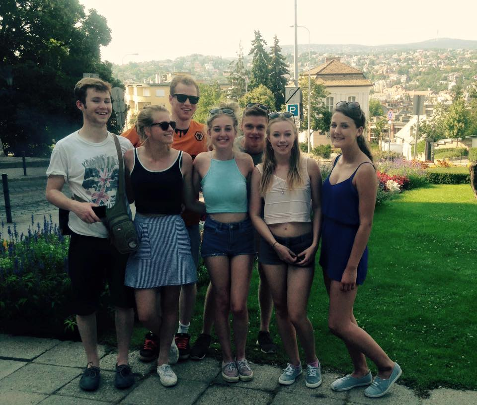

I like all sorts of music, and can play the guitar and the violin. I also like singing.
I can program in HTML and CSS, as well as use Python and the statistics program R
I am in my final year of my degree in Mathematics at Southampton University. In 2016 I will begin a Master's degree in Mathematics at Glasgow University
My favourite author is John Steinbeck. My favourite books are Wuthering Heights by Emily Bronte, East of Eden by Steinbeck and Great Expectations by Charles Dickens
I have been to France, Italy, Spain, The Czech Republic, Poland, Hungary, and the USA. In 2016 I will be going to Poland again.
